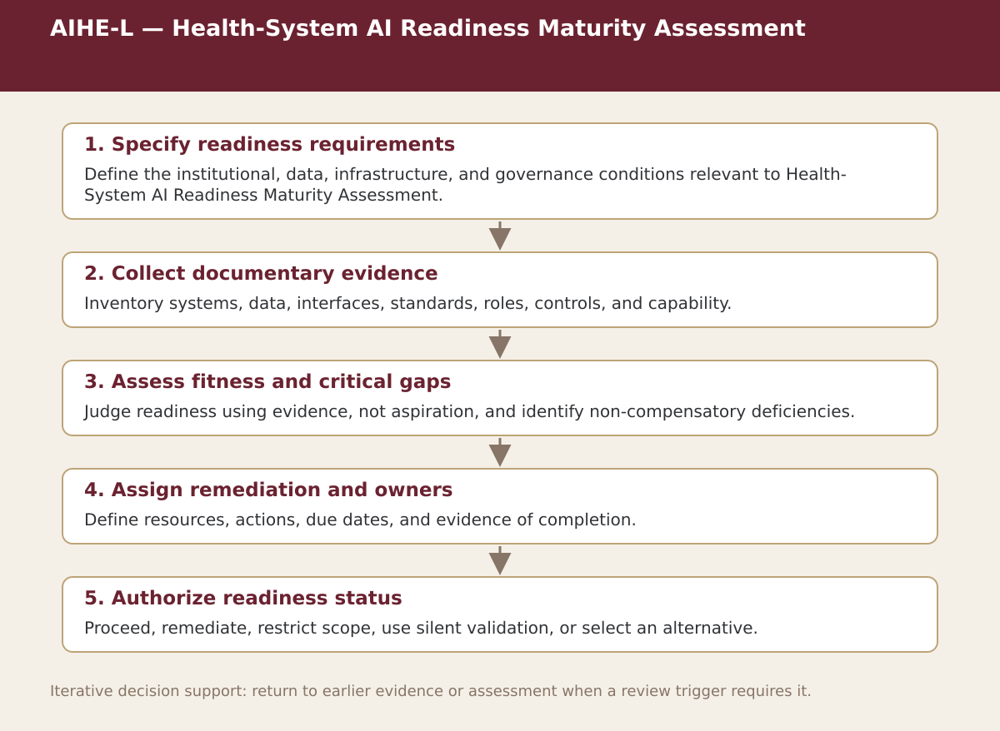

Supplemental specialist tool · Chapter 2
AIHE-L — Health-System AI Readiness Maturity Assessment
Rate health-system maturity by domain and identify the weakest critical capability and prerequisites before pilot or scale.

Process steps
| Step | Stage | Purpose | Required Input | Expected Output | Decision Or Gate |
|---|---|---|---|---|---|
| 1 | Specify readiness requirements | Define the institutional, data, infrastructure, and governance conditions relevant to Health-System AI Readiness Maturity Assessment. | Local evidence and the prior approved step | Versioned record for: Specify readiness requirements | Proceed, revise, escalate, restrict, or stop as appropriate |
| 2 | Collect documentary evidence | Inventory systems, data, interfaces, standards, roles, controls, and capability. | Local evidence and the prior approved step | Versioned record for: Collect documentary evidence | Proceed, revise, escalate, restrict, or stop as appropriate |
| 3 | Assess fitness and critical gaps | Judge readiness using evidence, not aspiration, and identify non-compensatory deficiencies. | Local evidence and the prior approved step | Versioned record for: Assess fitness and critical gaps | Proceed, revise, escalate, restrict, or stop as appropriate |
| 4 | Assign remediation and owners | Define resources, actions, due dates, and evidence of completion. | Local evidence and the prior approved step | Versioned record for: Assign remediation and owners | Proceed, revise, escalate, restrict, or stop as appropriate |
| 5 | Authorize readiness status | Proceed, remediate, restrict scope, use silent validation, or select an alternative. | Local evidence and the prior approved step | Versioned record for: Authorize readiness status | Proceed, revise, escalate, restrict, or stop as appropriate |
Status. This process map is a navigation and decision-support aid. Adapt it to the relevant jurisdiction, institution, population, workflow, technology version, evidence cut-off, and accountable authority.